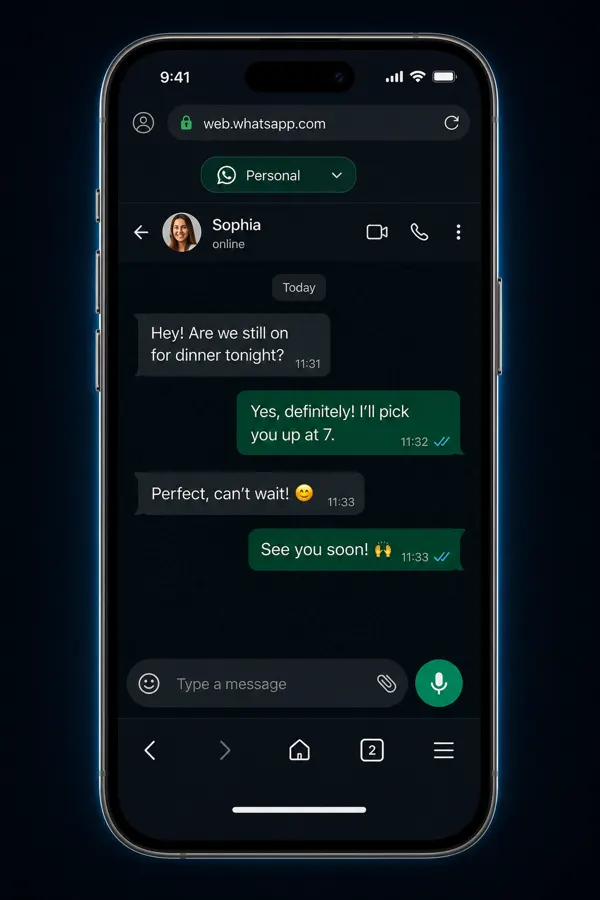
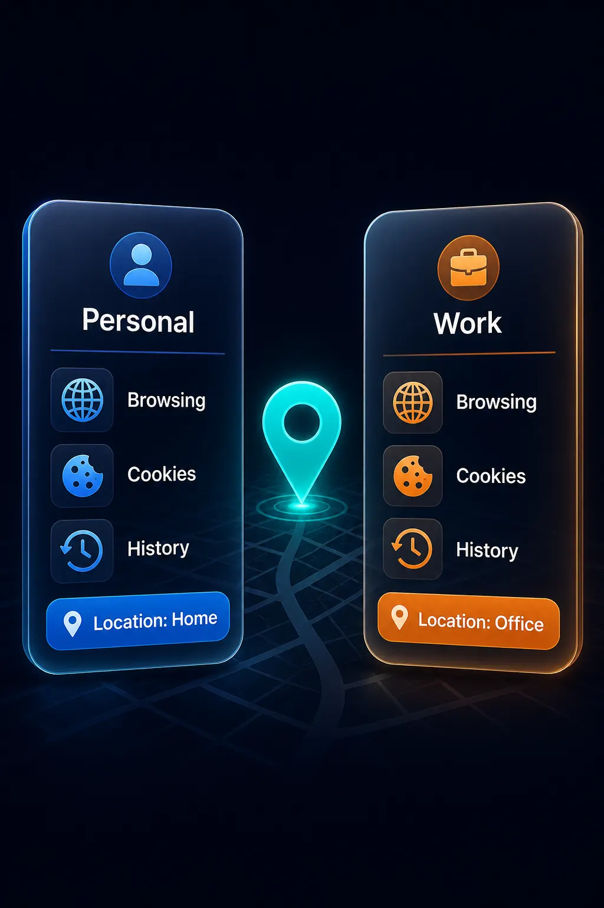

Sleep timer + gentle fade-out
Falling asleep to a podcast or web video? Set a timer. Volume fades, then playback stops—no midnight hunting for pause, no all-night drain.

Lock-screen web video, sleep-timer fade-out, isolated Spaces, and Face ID locks—built for how you actually browse on mobile.
Core capabilities
Set a countdown for web podcasts, white noise, and YouTube / Bilibili. Playback fades out smoothly and stops—saves battery and your ears.
Falling asleep to a podcast or web video? Set a timer. Volume fades, then playback stops—no midnight hunting for pause, no all-night drain.
After lock or switching apps, web audio and video can keep playing—past typical mobile browser foreground limits.
Commute podcasts, bedtime videos, lock-screen white noise. Pair with Sleep Timer for a complete listen-and-sleep workflow.

Each Space keeps its own cookies, cache, history, and bookmarks. Run multiple social or shop logins on one device without cross-contamination.
Cross-border sellers, social ops, or work/personal split: one browser, multiple fully isolated sessions. Switch in one tap.

Lock a specific Space with biometrics. Local data stays isolated—built for privacy-minded users.
Face ID / Touch ID plus PIN or pattern can protect a single Space. Keep sensitive accounts locked while the rest stay usable.

Reviews & FAQ
Bedtime podcasts, multi-shop logins, locked private Spaces—the scenarios people mention most.
“Finally I can lock the screen and keep a web podcast going—plus a sleep timer so it doesn’t run all night.”
“Three shop accounts, three Spaces. Cookies don’t mix. Way better than logging in and out.”
Web video and audio—YouTube, Bilibili, podcast sites, white-noise pages, and similar. After the countdown, playback fades out and stops.
No. Background play keeps media going after lock or app switch. Spaces isolate cookies and logins. Neither changes your network IP.
Free includes up to 3 Spaces. Unlimited Spaces and Space Lock need Premium. See Pricing.
Built-in ad and tracker blocking reduces popups and common ad slots. Video pre-roll reduction is best-effort and may change when sites update.
Background play, Sleep Timer, multi-account Spaces, and Face ID locks—in one browser.